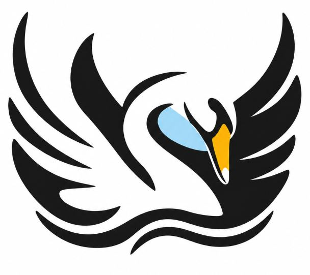
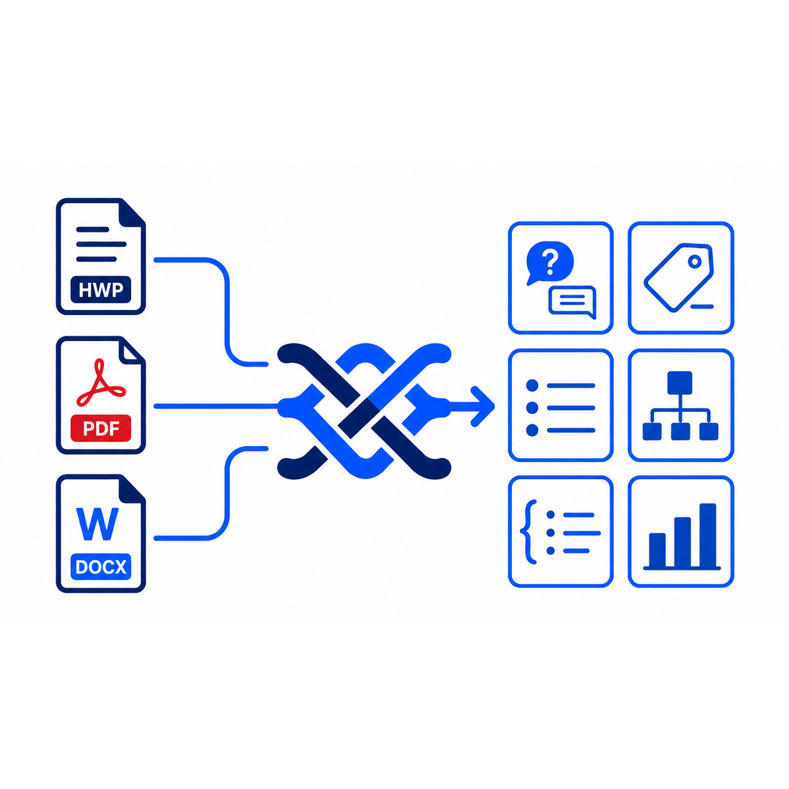
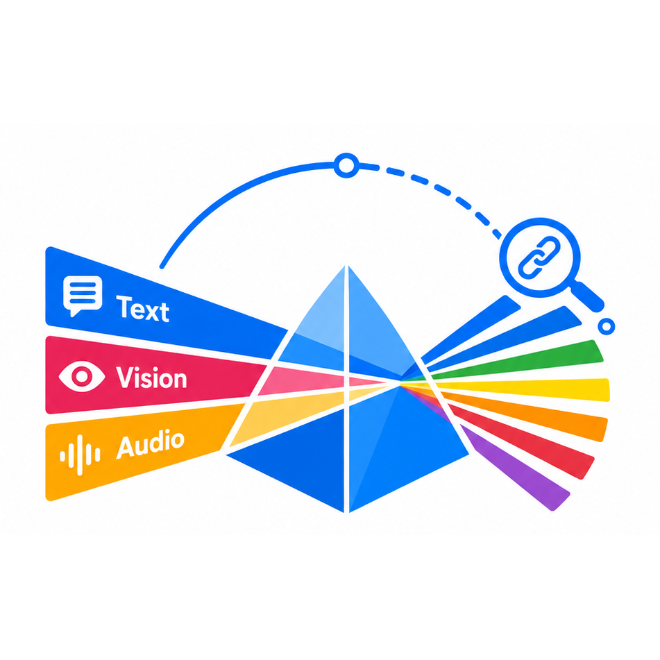

From accelerating scientific discovery to autonomous AI Co-Scientist systems and science-specialized large language models — our research applies large-scale AI to real scientific problems.
We apply large-scale AI to accelerate scientific discovery. Leveraging KISTI's national science and technology information resources, we build LLM-based technologies that help researchers navigate, understand, and generate scientific knowledge.
Improving the efficiency and productivity of the science and technology research process through the development of 'AI for Science' technology — an autonomous AI Co-Scientist system that supports the entire research workflow.

We develop KONI (KISTI Open Neural Intelligence), a family of large language models specialized for the science and technology domain that excel in both Korean and English. KONI models are built through continual pretraining on large scientific corpora, supervised fine-tuning (SFT), and preference optimization (DPO), and are released openly so that anyone can build upon them.

The data pillar of the KONI Series. Weave turns messy source documents — HWP, PDF, DOCX — into structured, balanced training data without a hand-defined schema: it discovers document types and metadata fields directly from the corpus, classifies every document against them, and groups the results into a reusable knowledge base rather than a disposable intermediate step.
The training-operations pillar of the KONI Series. Rather than guessing whether to use retrieval, fine-tuning, or both, Forge measures how much a base model already knows about a target domain and adapts it accordingly — a five-stage pipeline that runs entirely locally, with no external API calls.

The application layer of the KONI Series, and the most mature of the three pillars. Prism is a private, multimodal research assistant — reading text, images, and audio together — built for air-gapped settings where no cloud service can be called.